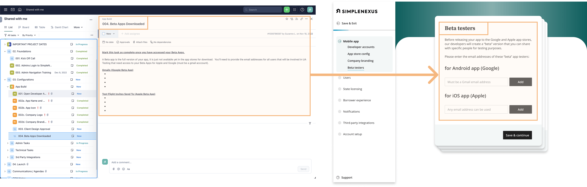
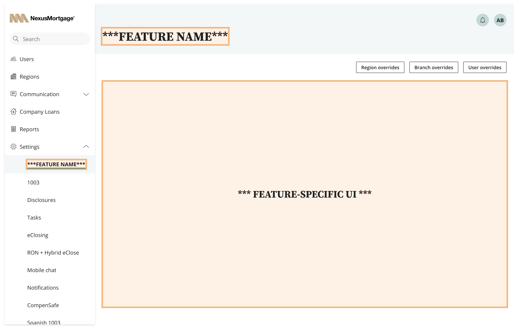

The only product team focused on admin settings and internal tooling.
1 designer, 1 PM, 1 engineering manager, 4 engineers.
Reducing onboarding times at mortgage SaaS startup
How an admin settings redesign empowered users, reduced bugs, and reduced onboarding times by 14 days.
The newly designed settings management system
for SimpleNexus, a mortgage application management system.
for SimpleNexus, a mortgage application management system.
Summary
Team
Project Duration
8 months
My role
I co-lead initial discovery with my PM and developed and tested all designs
Background
The mortgage application platform SimpleNexus was growing so quickly that the Implementation Team was struggling to keep pace with Sales.
Problem ❌
A brittle admin experience was delaying the Implementation Team, creating bugs and unnecessary support tickets for Customer Success, and preventing us from exposing core product functionality to our customers.
Solution ✅
A complete redesign of our settings management system: standardized interaction patterns, user-centered naming conventions, and access to core functionality that previously required users to contact Customer Success.
Outcome 📊
Users could now control key functionality – like client notifications – on their own.
Customer Success able to focus on strategy instead of tooling.
Faster onboarding times meant the company could start billing customers 14 days sooner.
14
days faster
customer onboarding
(down from 90 days)
(down from 90 days)
75%
reduction
in settings-related support tickets
Why did it take 90 days to onboard a new bank?
1) All 1,600+ product settings lived in a single table, with (near) zero documentation
Only 2 people on the implementation team had comprehensive understanding of which settings controlled each feature.
This affected our ability to grow, train and fully utilize the Implementation Team.
2) Poor UX prevented us from exposing most admin tooling to end-users
Even something as simple as notifications was off-limits.
Improving the experience around notifications would reduce the burden on the Implementation Team.
Notifications were the #1 priority when we surveyed all 5,000 of our admin users.
3) Poor visibility into setting inheritance behavior ==> weeks of testing
If the Implementation Team could better visualize the state of the application, there would be less configuration errors.
Testing represented nearly 1/3 of our 90 implementation period.
A solution in 4 parts
Part 1
Replace monolithic settings table to improve navigation, visibility & usability
Every bank customer required bespoke customization of our product to match their business practices.
The majority of our product configuration (across all features) involved tweaking settings inside a single, massive data table.
before ☹️
All 1,680 product settings lived in one table
All settings for all features across the entire product were dumped in a single table
No naming conventions
Every product team named their settings as they wished, without cross-team coordination.
Meaningless & inconsistent groupings
Without conventions, these groupings had no value for users.
No visibility into inheritance behavior
Changing a setting in a nested org (like a region or branch) would break inheritance and block changes from the parent company settings.
After 😃
Separate settings pages grouped by feature
Features were renamed to reflect users’ understanding of tool.
User-centered naming conventions + functional descriptions added
Settings were renamed and documented so that end-users would understand them.
Improved visibility for variation across company
Overrides were given their own page so admins could see at a glance how different regions and branches were deviating from company defaults.
Support for legacy settings with non-boolean UI
95% of settings had boolean values, but some had more complex UI.
Additional UI and functionality could be tucked inside a modal.
Part 2
Design new controls for Notifications and expose them to end-users
Our survey of over 5,000 admin users (as well as interviews with with Customer Success reps) showed that Notifications were the #1 feature that customers wanted access to in settings.
before ☹️
12 settings per notification
A separate setting existed for each each notification message type and recipient.
Exact name required to locate notification
The only way to find the setting you wanted was to know it’s precise name and search the data table of 1,680 settings.
After 😃
More intuitive UI
All 12 notification types rolled up into a single parent notification, defined by the triggering event.
Notification triggers clearly defined
Previously, the notification trigger was not even indicated in the UI.
Ability to edit notification content and formatting
Previously, the message templates lived in a completely different area of the product.
Part 3
Visualize "inheritance behavior" and provide controls for overriding defaults
Settings configuration at the company level automatically cascaded down to regions, branches and users.
Since all features "inherit" in the same way, we wanted to visualize and standardize those interactions so that end users could configure the app on their own.
The initial screen users see after logging into Meetly, a meeting notes platform powered by a user's calendar.
Visualizing how setting inheritance and overrides worked.
Part 4
Productize information gathering with self-serve onboarding wizard
In order to white-label our software, our Implementation Team had to gather information from the customer (branding assets, org charts, state licenses, etc) over the course of several weeks of meetings.
I took the Implementation teams playbook (from Wrike) for gathering this information and turned it into a self-serve wizard that allowed newly signed customers to complete their onboarding with very little hand-holding from customer support.

I used our Implementation team's Wrike playbook to gather requirements for a self-serve onboarding flow.

By "productizing" our manual implementation process, we reduced onboarding times by 14 days, to around ~76 down from 90.
Impact to the larger organization
HOlding product teams accountable
Including "Configuration" in the user journey for new feature development
Product teams were not longer allowed to dump feature flags and settings into a massive shared table.
In order to ship new product, they needed to expose admin controls with the design patterns above.
Putting onus on product teams to "own" their configuration experiences
With settings exposed to customers, product teams had a new prerogative to consider how admin users would need to configure the feature that product team was working on.
Empowering OTHER teams with standardized templateS
Standardized Figma templates (feature-agnostic)
All settings share logic around inheritance, permissions and default overrides.
I wanted to standardize those common elements without being prescriptive about how a feature is designed or controlled.

Settings organized by feature, with Region/Branch/User override behavior and notifications standardized
Examples of different features with this template applied.
This design allowed other product teams to include any custom UI required to support the features they owned.
This design allowed other product teams to include any custom UI required to support the features they owned.
Lessons learned
Perfect is the enemy of Impactful
I spent a lot of time perfecting a “universal design” for all settings, rather than shipping something less "pure" that would still have addressed 80% of the problem.
Because notifications was the biggest area of concern for users, fixing that problem first would have brought more impact sooner.
Importance of documentation
Half of the effort of this project lay in tracking down undocumented settings in code and giving them meaning with descriptions and design.
Lack of accountability around documentation created huge impediments, not just to the current experience, but also our ability to improve that experience.
Beware the squeaky-wheel stakeholder
I thought I'd done a good job resisting the influence of an internal teams manager who had strong opinions about the tool we were building.
Ultimately, this person's involvement shifted our attention away from areas that would have been more impactful for our core users.